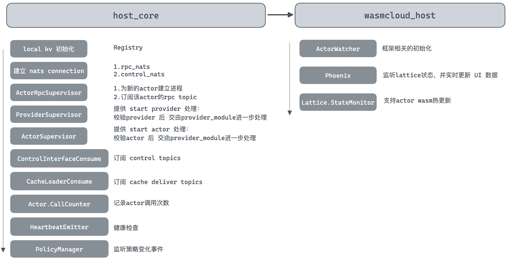

项目目录介绍 hostcore 目录处理 nats 相关 topic 的处理，属于整个 runtime 的核心。
otel 目录是用来指导 opentelemetry 的使用，项目中其他地方出现的该单词基本也是这个意思。
wasmcloud_host 是 OTP Application 项目，其中 wasmcloud_host_web 它使用 phoenix framework + liveview 构建，用来处理用户在 webUI 中处理的请求。然后将对应的消息经由 NATS，最后由 host core 作处理。
项目启动指令 进入项目 wasmcloud_host 目录
1 2 3 4 5 make esbuild nats-server -js make run
注意在启动的时候，host_core 也会一起呗启动，在 mix.exs 中可看到对应配置
1 2 3 4 5 6 7 8 9 10 11 12 13 14 15 16 def application do [ mod: {WasmcloudHost.Application, []}, **extra_applications: [:logger , :runtime_tools , :host_core ],** env: [app_version: @app_vsn ] ] end defp deps do [ // ..... **{:host_core, path: "../host _core"}, // ....** ] end
在 https://hexdocs.pm/mix/Mix.Tasks.Compile.App.html 文档中，我们得知：extra_application 会先于 application 启动，所以 host_core 在 wasmcloud_host 之前启动
:extra_applications - a list of OTP applications your application depends on which are not included in :deps (usually defined in deps/0 in your mix.exs). For example, here you can declare a dependency on applications that ship with Erlang/OTP or Elixir, like :crypto or :logger. Optional extra applications can be declared as a tuple, such as {:ex_unit, :optional}. Mix guarantees all non-optional applications are started before your application starts.

host_core 启动流程 查看 host_core/lib/host_core.ex,关注 init 和 start 函数，进而分析启动时的处理。
1 2 3 4 5 6 7 8 9 10 11 12 13 14 15 16 17 18 19 20 21 22 def start do config = Vapor.load!(HostCore.ConfigPlan) config = post_process_config(config) OpentelemetryLoggerMetadata.setup() **children = mount_supervisor_tree(config)** opts = [strategy: :one_for_one , name: HostCore.Supervisor] started = Supervisor.start_link(children, opts) // ...... Logger.info( "Started wasmCloud OTP Host Runtime", version: "#{Application.spec(:host_core , :vsn ) |> to_string()} " ) started end
1 2 3 4 5 6 7 8 9 10 11 12 13 14 15 16 17 18 19 20 21 22 23 24 25 26 27 28 29 30 31 32 33 34 35 36 37 38 39 40 41 42 43 44 45 46 47 48 49 50 51 52 53 54 55 56 57 58 59 60 61 62 63 64 65 66 67 68 69 70 71 72 73 74 75 76 77 defp mount_supervisor_tree do [ {Registry, keys: :unique , name: Registry.ProviderRegistry}, {Registry, keys: :duplicate , name: Registry.ActorRegistry}, {Registry, keys: :unique , name: Registry.ActorRpcSubscribers}, {Registry, keys: :duplicate , name: Registry.EventMonitorRegistry, partitions: System.schedulers_online()}, Supervisor.child_spec( {Gnat.ConnectionSupervisor, HostCore.Nats.control_connection_settings(config)}, id: :control_connection_supervisor ), Supervisor.child_spec( {Gnat.ConnectionSupervisor, HostCore.Nats.rpc_connection_settings(config)}, id: :rpc_connection_supervisor ), {HostCore.Actors.ActorRpcSupervisor, strategy: :one_for_one }, {HostCore.Providers.ProviderSupervisor, strategy: :one_for_one , name: ProviderRoot}, {HostCore.Actors.ActorSupervisor, strategy: :one_for_one , allow_latest: config.allow_latest, allowed_insecure: config.allowed_insecure}, Supervisor.child_spec( {Gnat.ConsumerSupervisor, %{ connection_name: :control_nats , module: HostCore.ControlInterface.Server, subscription_topics: [ %{topic: "wasmbus.ctl.#{config.lattice_prefix} .registries.put" }, %{topic: "wasmbus.ctl.#{config.lattice_prefix} .cmd.#{config.host_key} .*" }, %{topic: "wasmbus.ctl.#{config.lattice_prefix} .ping.hosts" }, %{ topic: "wasmbus.ctl.#{config.lattice_prefix} .linkdefs.*" , queue_group: "wasmbus.ctl.#{config.lattice_prefix} " }, %{ topic: "wasmbus.ctl.#{config.lattice_prefix} .get.*" , queue_group: "wasmbus.ctl.#{config.lattice_prefix} " }, %{ topic: "wasmbus.ctl.#{config.lattice_prefix} .get.#{config.host_key} .inv" }, %{topic: "wasmbus.ctl.#{config.lattice_prefix} .auction.>" } ] }}, id: :latticectl_consumer_supervisor ), Supervisor.child_spec( {Gnat.ConsumerSupervisor, %{ connection_name: :control_nats , module: HostCore.Jetstream.CacheLoader, subscription_topics: [ %{topic: "#{config.cache_deliver_inbox} " } ] }}, id: :cacheloader_consumer_supervisor ), {HostCore.Actors.CallCounter, nil }, {HostCore.Host, config}, {HostCore.HeartbeatEmitter, config}, {HostCore.Jetstream.Client, config} ] ++ HostCore.Policy.Manager.spec() end
对于其中关键流程，我们进一步看下代码
rpc&lattice connection host_core/lib/host_core/nats.ex
建立了两个链接，我们重点关注 name 字段，这个元组名称是贯穿整个 OTP 项目的，分别为
lattice_nats 用于 RPC 通信control_nats 用于 lattice control interface 的通信
1 2 3 4 5 6 7 8 9 10 11 12 13 14 15 16 17 18 19 defmodule HostCore.Nats do @moduledoc false require Logger def rpc_connection_settings do %{ **name: :lattice_nats ,** backoff_period: 4_000 , connection_settings: [] } end def control_connection_settings do %{ **name: :control_nats ,** backoff_period: 4_000 , connection_settings: [] } end
Actor RPC Supervisor 该部分用于维护 Actor RPC 通信所需的进程管理（如启动、守护等）。具体的 RPC 响应和处理由 host_core/lib/host_core/actors/actor_rpc_server.ex 完成。
init&start 1 2 3 4 5 6 7 8 def start_link do Supervisor.start_link(__MODULE__ , state, name: __MODULE__ ) end def init do Process.flag(:trap_exit , true ) Supervisor.init([], strategy: :one_for_one ) end
start&stop actor rpc subscriber 通过 start_or_reuse_consumer_supervisor 来为指定的 actor 订阅对应的 topic wasmbus.rpc.{prefix}.{claims.public_key}
1 2 3 4 5 6 7 8 9 10 11 12 13 14 15 16 17 18 19 20 21 22 23 24 25 26 27 28 def start_or_reuse_consumer_supervisor do prefix = HostCore.Host.lattice_prefix() **topic = "wasmbus.rpc.#{prefix} .#{claims.public_key} " cs_settings = %{ connection_name: :lattice_nats , **module: HostCore.Actors.ActorRpcServer, subscription_topics: [ %{topic: topic, queue_group: topic} ] } spec_id = via_tuple(claims.public_key) spec = Supervisor.child_spec( {Gnat.ConsumerSupervisor, cs_settings}, id: spec_id ) case Supervisor.start_child( __MODULE__ , spec ) do {:ok , _v} -> Logger.debug("Starting consumer supervisor for actor RPC #{claims.public_key} " ) end
Provider Supervisor init&start 常规的启动参数，暂无特殊处理
1 2 3 4 5 6 7 8 9 @start_provider "start_provider" def start_link do DynamicSupervisor.start_link(__MODULE__ , init_arg, name: __MODULE__ ) end @impl true def init do DynamicSupervisor.init(strategy: :one_for_one ) end
start provider 使用 provider 有多种方式，包括：OCI、Bindle、File。这里的 provider supervisor 只负责进行 provider 的相关校验，开启相关的进程，具体的处理逻辑由 ProviderModule。
该文件剩余的部分包装了其他几种 start provider 的方式，包括
1 2 3 4 5 6 7 8 9 10 11 12 13 14 15 16 17 18 19 20 21 22 23 24 25 26 27 28 29 30 31 32 33 34 35 36 37 38 39 40 41 42 43 44 defp start_executable_provider path, claims, link_name, contract_id, oci \\ "" , config_json \\ "" , annotations \\ %{} ) do with %{permitted: true } <- HostCore.Policy.Manager.evaluate_action( %{ publicKey: "" , contractId: "" , linkName: "" , capabilities: [], issuer: "" , issuedOn: "" , expiresAt: DateTime.utc_now() |> DateTime.add(60 ) |> DateTime.to_unix(), expired: false }, %{ publicKey: claims.public_key, issuer: claims.issuer, linkName: link_name, contractId: contract_id }, @start_provider ), 0 <- Registry.count_match(Registry.ProviderRegistry, {claims.public_key, link_name}, :_ ) do **DynamicSupervisor.start_child( __MODULE__ , {ProviderModule,** {:executable , path, claims, link_name, contract_id, oci, config_json, annotations}} ) else %{permitted: false , message: message, requestId: request_id} -> Tracer.set_status(:error , "Policy denied starting provider, request: #{request_id} " ) {:error , "Starting provider #{claims.public_key} denied: #{message} " } _ -> {:error , "Provider is already running on this host" } end end
关于 provider 的 init 流程。我们在分析 start actor 和 start provider 时进一步深入。
actor supervisor 经分析，actor supervisor 和 provider supervisor 的流程类似：管理 start actor 时的进程，进行必要的校验后交由 actor module 处理。
1 2 3 4 5 6 7 8 9 10 11 12 13 14 15 16 17 18 19 20 21 22 23 24 25 26 27 28 29 30 31 32 33 34 35 36 37 38 39 40 41 42 43 44 45 46 47 48 49 50 51 52 53 54 55 56 57 58 @start_actor "start_actor" def start_link do DynamicSupervisor.start_link(__MODULE__ , init_arg, name: __MODULE__ ) end @impl true def init do Process.flag(:trap_exit , true ) DynamicSupervisor.init(strategy: :one_for_one ) end @spec start_actor( bytes :: binary(), oci :: String.t(), count :: Integer.t(), annotations :: Map.t() ) :: {:error , any} | {:ok , [pid()]} def start_actor "" , count \\ 1 , annotations \\ %{}) when is_binary(bytes) do Tracer.with_span "Starting Actor" do Tracer.set_attribute("actor_ref" , oci) Tracer.set_attribute("byte_size" , byte_size(bytes)) Logger.debug("Start actor request received" , oci_ref: oci) case HostCore.WasmCloud.Native.extract_claims(bytes) do {:error , err} -> Tracer.set_status(:error , "#{inspect(err)} " ) Logger.error("Failed to extract claims from WebAssembly module" , oci_ref: oci) {:error , err} {:ok , claims} -> with %{permitted: true } <- **HostCore.Policy.Manager.evaluate_action( %{ publicKey: "" , contractId: "" , linkName: "" , capabilities: [], issuer: "" , issuedOn: "" , expiresAt: DateTime.utc_now() |> DateTime.add(60 ) |> DateTime.to_unix(), expired: false }, %{ publicKey: claims.public_key, issuer: claims.issuer, contractId: nil , linkName: nil }, @start_actor ), false <- other_oci_already_running?(oci, claims.public_key) do case 1 ..count |> Enum.reduce_while([], fn _count, pids -> **case DynamicSupervisor.start_child( __MODULE__ , {HostCore.Actors.ActorModule, {claims, bytes, oci, annotations}} ) do **
Actors.CallCounter 目前看下来就是记录 actor 的调用次数？？具体的设计意义，需要进一步调研后确认。
1 2 3 4 5 6 7 8 9 10 11 12 13 14 15 16 17 defmodule HostCore.Actors.CallCounter do use GenServer def start_link do GenServer.start_link(__MODULE__ , []) end def init _ ) do :ets .new(__MODULE__ , [:public , :set , :named_table ]) {:ok , nil } end def read_and_increment when is_binary(pk) do :ets .update_counter(HostCore.Actors.CallCounter, pk, 1 , {pk, -1 }) end end
HeartbeatEmitter init&start 1 2 3 4 5 6 7 8 9 10 11 def start_link do GenServer.start_link(__MODULE__ , opts, name: __MODULE__ ) end @impl true def init do :timer .send_interval(@thirty_seconds , self (), :publish_heartbeat ) Process.send(self (), :publish_heartbeat , [:noconnect , :nosuspend ]) {:ok , opts} end
给所有的 actors 和 providers 发布健康检查消息等待他们回复，进而确定其健康状态。
1 2 3 4 5 6 7 8 9 10 11 12 13 14 15 16 17 18 19 20 21 22 23 24 25 26 27 defp publish_heartbeat do topic = "wasmbus.evt.#{state[:lattice_prefix ]} " msg = generate_heartbeat(state) HostCore.Nats.safe_pub(:control_nats , topic, msg) end defp generate_heartbeat do actors = HostCore.Actors.ActorSupervisor.all_actors_for_hb() |> Enum.map(fn {k, iid} -> %{public_key: k, instance_id: iid} end ) providers = HostCore.Providers.ProviderSupervisor.all_providers() |> Enum.map(fn {_pid, pk, link, contract, instance_id} -> %{public_key: pk, link_name: link, contract_id: contract, instance_id: instance_id} end ) %{ actors: actors, providers: providers, labels: HostCore.Host.host_labels(), friendly_name: HostCore.Host.friendly_name(), version: Application.spec(:host_core , :vsn ) |> to_string(), uptime_seconds: ut_seconds, uptime_human: ut_human } **|> CloudEvent.new("host_heartbeat" , state[:host_key ])**
wasmcloud_host 启动流程 wasmcloud_host 是一个 OTP(Open Telecom Platform ) application 应用，按照约定，我们看下项目启动的配置文件 wasmcloud_host/lib/wasmcloud_host/application.ex
1 2 3 4 5 6 7 8 9 10 11 12 13 14 15 16 17 18 19 20 21 22 23 24 25 26 27 28 29 30 31 32 33 defmodule WasmcloudHost.Application do use Application def start do children = [ WasmcloudHostWeb.Telemetry, {Phoenix.PubSub, name: WasmcloudHost.PubSub}, WasmcloudHostWeb.Endpoint, **WasmcloudHost.Lattice.StateMonitor,** **WasmcloudHost.ActorWatcher** ] opts = [strategy: :one_for_one , name: WasmcloudHost.Supervisor] Supervisor.start_link(children, opts) end end
Lattice.StateMonitor 正如其名，该进程主要用来处理 Lattice 的状态。同时通过订阅 wasmbus.evt.{prefix} 来处理 lattice 事件（订阅事件也是为了更新 state，而不是说进行实际的调度），事件的格式遵循 CloudEvent 规范。关于事件部分，可参考
Lattice(NATS) 通信协议总结
接下来我们分析代码，对于 Supervisor 监督的子进程，我们在分析其启动流程时，一般关注 init 和 start_link(或 start）函数。
init init 主要进行了如下工作
订阅 wasmbus.evt.#{prefix}
读取缓存，初始化 process state
1 2 3 4 5 6 7 8 9 10 11 12 13 14 15 16 17 18 19 20 21 22 23 24 25 26 27 28 29 30 31 32 33 34 35 36 37 38 39 40 41 42 43 44 45 46 47 48 49 50 51 52 53 54 55 @impl true def init do state = %State{ linkdefs: %{}, refmaps: %{}, claims: %{}, hosts: %{ HostCore.Host.host_key() => %{ actors: %{}, providers: %{}, labels: HostCore.Host.host_labels() } } } prefix = HostCore.Host.lattice_prefix() **topic = "wasmbus.evt.#{prefix} " {:ok , _sub} = Gnat.sub(:control_nats , self (), topic)** **** Registry.register(Registry.EventMonitorRegistry, "cache_loader_events" , []) {:ok , state, {:continue , :**retrieve_cache** }} end @impl true def handle_continue :**retrieve_cache** , state) do cmap = HostCore.Claims.Manager.get_claims() |> Enum.reduce(state.claims, fn claims, cmap -> Map.put(cmap, claims.sub, claims) end ) ldefs = HostCore.Linkdefs.Manager.get_link_definitions() |> Enum.reduce(state.linkdefs, fn ld, linkdefs_map -> key = {ld.actor_id, ld.contract_id, ld.link_name} map = %{values: ld.values, provider_key: ld.provider_id} Map.put(linkdefs_map, key, map) end ) PubSub.broadcast(WasmcloudHost.PubSub, "lattice:state" , {:claims , cmap}) PubSub.broadcast(WasmcloudHost.PubSub, "lattice:state" , {:linkdefs , ldefs}) **new_state = state |> Map.put(:claims , cmap) |> Map.put(:linkdefs , ldefs)** **{:noreply , new_state}** end
start_link 这部分没啥好说的，就是以 link 的方式启动进程（或者理解为守护的方式启动）
1 2 3 def start_link do GenServer.start_link(__MODULE__ , opts, name: :state_monitor ) end
事件处理 这部分主要关注该模块定义的 process_event。通过参数的 type 来确定具体的处理逻辑（这个用到 Elixir 的 Match 机制，会自动根据 type 来执行对应的函数）。
1 2 3 4 5 6 7 8 9 10 11 12 13 14 15 16 17 18 19 20 21 22 23 defp handle_event do evt = body |> Cloudevents.from_json!() **process_event(state, evt)** end defp process_event state, %Cloudevents.Format.V_1_0 .Event{ data: %{ "public_key" => pk }, source: source_host, datacontenttype: "application/json" , **type: "com.wasmcloud.lattice.actor_started" ** } ) do hosts = add_actor(pk, source_host, state.hosts) PubSub.broadcast(WasmcloudHost.PubSub, "lattice:state" , {:hosts , hosts}) %State{state | hosts: hosts} end
处理的 lattice:state 最后会被 page_live 订阅，进而改变页面的展示。可查阅 wasmcloud_host/lib/wasmcloud_host_web/live/page_live.ex
1 2 3 4 5 6 7 8 9 10 11 12 13 14 15 16 17 18 19 20 21 22 23 24 defmodule WasmcloudHostWeb.PageLive do use WasmcloudHostWeb, :**live_view require Logger @impl true def mount do **WasmcloudHostWeb.Endpoint.subscribe("lattice:state" ) WasmcloudHostWeb.Endpoint.subscribe("frontend" ) {:ok , socket |> assign( hosts: WasmcloudHost.Lattice.StateMonitor.get_hosts(), linkdefs: WasmcloudHost.Lattice.StateMonitor.get_linkdefs(), ocirefs: WasmcloudHost.Lattice.StateMonitor.get_ocirefs(), claims: WasmcloudHost.Lattice.StateMonitor.get_claims(), open_modal: nil , selected_host: HostCore.Host.host_key() )} end def handle_info :hosts , hosts}, socket) do {:noreply , assign(socket, hosts: hosts)} end
ActorWatcher 这里主要是为了支持 actor 的 hot reload 功能。这样在开发 actor 时，指定路径的 wasm 发生改变时，就能理解更新 actor。（存疑：在未开启 hot reload 时，该文件的作用需要进一步调研）
init & start_link 这部分没有特别的操作，就是正常启动，状态是空的 map。
1 2 3 4 5 6 7 def init do {:ok , %{}} end def start_link do GenServer.start_link(__MODULE__ , args, name: :actor_watcher ) end
start actor 当检测到 actor 的 wasm 发生变更时，调用 start actor
1 2 3 4 5 6 def start_actor do case HostCore.Actors.ActorSupervisor.start_actor(bytes, "" , replicas) do {:ok , _pids} -> :ok {:error , e} -> {:error , e} end end